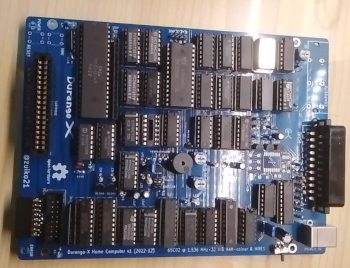
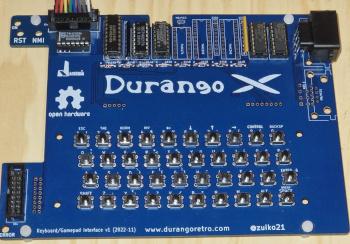
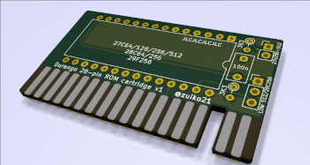

Getting Started
Here you can find information about how to Start with the Durango Computer
Description
Durango is made from two PCBs: The actual SBC, and a peripheral board with a keyboard and two gamepad sockets. The peripheral board can be built to support either NES gamepads or Megadrive/Genesis gamepads (including Atari VCS/2600-style joysticks).
Build your own Durango
If you want to create a new Durango computer, you need to download the blueprints and obtain the components; you can find the blueprints in the following link:
https://github.com/zuiko21/minimOS/tree/master/hard/kicad/durango/full
To open the blueprints you need the KiCad application.
You will need the symbols library for this project:
https://github.com/zuiko21/minimOS/tree/master/hard/kicad/symbols
You can render in Kicad an image similar to:

Durango Main Board. Bill of Materials
Board
Sockets
- 14-pin (x9)
- 16-pin (x19)
- 20-pin (x5)
- 28-pin (x1)
- 40-pin (x1)
Resistors (all 1/8 Watt unless noted otherwise)
- 27 (x1) (RED VIOLET BLACK) 1/2 Watt
- 68 (x2) (BLUE GREY BLACK)
- 120 (x1) (BROWN RED BROWN)
- 150 (x1) (BROWN GREEN BROWN)
- 330 (x1) (ORANGE ORANGE BROWN)
- 470 (x3) (YELLOW VIOLET BROWN)
- 680 (x2) (BLUE GREY BROW)
- 1K (x3) (BROWN BLACK RED)
- 1K2 (x1) (BROWN RED RED)
- 3K3 (x4) (ORANGE ORANGE RED)
- 5K6 (x1) (GREEN BLUE RED)
- 6K8 (x2) (BLUE GREY RED)
- 12K (x3) (BROWN RED ORANGE)
- 22K (x3) (RED RED ORANGE)
- 39K (x1) (ORANGE WHITE ORANGE)
- 220K (x3) (RED RED YELLOW)
Resistor networks
- 4x 4K7, 5-pin (x1)
- 8x 3K3, 9-pin (x1)
Capacitors
- 68 pF (x1)
- 0.1 uF (x5) three of them for the optional composite-PAL output
- 10 µF (x2) 25V any rating 10 Volts or more will do, preferably as small as possible
- 100 µF (x3) 10V
- 470 µF (x1) 10V
Semiconductors
- 1N4148 (x5)
- BC548B (x6) or any other small-signal NPN transistor (e.g. 2N3904, but check pinout!)
- Red 3 mm LED (x1)
- Green 3 mm LED (x1)
Integrated Circuits
- 74HC00 (x1)
- 74HC02 (x1)
- 74HC20 (x1)
- 74HC21 (x1)
- 74HC32 (x1)
- 74HC74 (x1)
- 74HC85 (x2)
- 74HC86 (x2)
- 74HC132 (x1)
- 74HC139 (x2)
- 74HC157 (x4)
- 74HC166 (x1)
- 74HC174 (x1)
- 74HC175 (x1)
- 74HC245 (x3)
- 74HC257 (x4)
- 74HC367 (x1)
- 74HC574 (x1)
- 74HC688 (x1)
- 74HC4040 (x3)
- 65C02 (x1)
- 27C256 (x1) for the ROM cartridge
Oscillator can
- 24.576 MHz (x1)
Others
- Piezo Buzzer (x1)
- 6x6x21 mm Tactile switch (x2)
- IDC shrouded 16-pin header (x1)
- SCART 21-pin connector (x1)
- 3x RCA socket (x1) optional
Optional for composite PAL output
- 10 pF (x1)
- 22 nF (x1)
- AD724 (x1) surface-mounted device
- 4.43 MHz crystal (x1)
Durango Keyboard & Gamepads Board. Bill of Materials (NES flavour)
The Keyboard & Gamepads Board provides an integrated keyboard and two Gamepad ports (MegaDrive/Genesis/Atari 2600 or NES-type gamepad options).

Top Board (keyboard & NES gamepads)
Sockets
- 14-pin (x1)
- 16-pin (x4)
- 20-pin (x1)
Passive devices
- 1N4148 diode (x8)
- Resistor network 8x 220K, 9-pin (x1)
- Resistor network 8x 10K, 9-pin (x1)
Other
- NES Socket (x2)
- Tactile Switch DIP-4 6x6x7mm (x40)
- IDC Shrouded 16-pin header (x2) 2x8
- 8-pin socket, long pins (x2) might use a single unit in 2x8 configuration, if available
Integrated Circuits
- 74HC138 (x1)
- 74HC86 (x1)
- 74HC174 (x1)
- 74HC245 (x1)
- 74HC595 (x2)
Assembly instructions
- Mount diodes: D11, D12, D13, D4, D15, D16, D17, D18
- Mount sockets: U9 U13, U12, U1
- Mount sockets: U34, U55
- Mount resistors: RN11, RN3
- Mount IDC: J1, J2
- Mount NES sockets: J33, J54
- Mount switches: SW1 to SW40
Durango Keyboard & Gamepads Board. Bill of Materials (MD/Genesis/VCS flavour)
Top Board (keyboard & MD gamepads)
Sockets
- 14-pin (x1)
- 16-pin (x3)
- 20-pin (x3)
Passive devices
- 1N4148 diode (x8)
- Resistor network 8x 220K, 9-pin (x1)
- Resistor network 8x 10K, 9-pin (x1)
Connectors
- DE9 Socket (x2)
- Tactile Switch DIP-4 6x6x7mm (x40)
- IDC Shrouded 16-pin header (x2) 2x8
- 8-pin socket, long pins (x2) might use a single unit in 2x8 configuration, if available
Integrated Circuits
- 74HC138 (x1)
- 74HC86 (x1)
- 74HC174 (x2)
- 74HC245 (x3)
Assembly instructions
- Mount diodes: D11, D12, D13, D4, D15, D16, D17, D18
- Mount sockets: U9 U13, U12, U1,
- MOunt sockets: U26, U24, U45
- Mount resistors: RN11, RN22, RN3
- Mount IDC: J1, J2
- Mount DE9: J23, J44
- Mount switches: SW1 to SW40
Durango Cartridge

Here you can find the ROM Cartridge:
PCB Gerbers for JLCPCB ordering KiCad source files
Bill Of Materials (28-pin Durango Cartridge)
Cartridge configuration
You may leave 3K3 resistors in R1 & R2 positions, with pin headers on JP1 & JP2, for easy ROM type switching. On the other hand, if a particular cartridge is to be used with a single type of ROM chip, it may be permanently wired as follows:
Suitable ROM chips and jumper Configuration
| Type | Model | Capacity | JP1 | JP2 | R1 | R2 |
|---|---|---|---|---|---|---|
| EPROM | 27C64 | 8KB | - | - | 0 | 0 |
| EPROM | 27C128 | 16KB | - | - | 0 | 0 |
| EPROM | 27C256 | 32KB | ON | - | - | 0 |
| EPROM | 27C512 (lower) | 64KB | ON | UP | - | - |
| EPROM | 27C512 (upper) | 64KB | ON | * | - | - |
| EEPROM | 28C64 | 8KB | - | - | 0 | - |
| EEPROM | 28C256 | 32KB | - | DOWN | 0 | - |
| FLASH | 29F256 | 32KB | - | - | - | 0 |
0 = jumper wire, - = not connected.
Built Software for Durango
If you want to built your own Durango Software (like Games or applications), you don't need a Durango to Built Software.
We built some Tools for improve the development of software with Durango. Like:
- Emulator
- Developer-friendly C Library (Durango Lib)
- Durango Docker Image
- Visual Studio Code Extensión (Durango Code)
You can use the Durango Emulator (Perdita), to test your ROMs and play Durango Games; or use the development tools for create your own Durango Applications.
You can find them in the Development & Tools section.